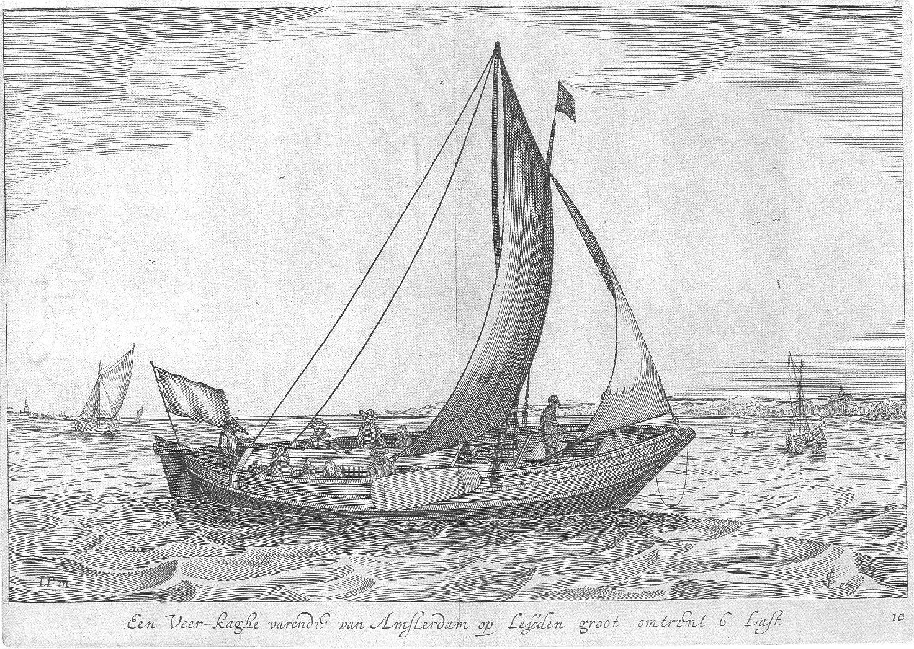
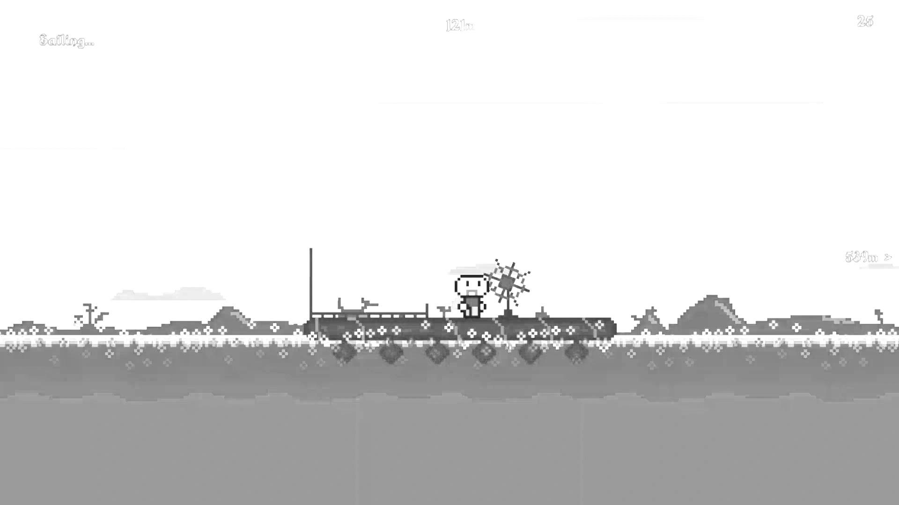

While studying Food Engineering at METU, one of the elements that most captured my attention and influenced me was the sailors' efforts to find food preservation methods against scurvy and their persistence in exploration despite having to consume drinks like grog due to the scarcity of clean water. The fact that people continued to strive for discovery despite all these hardships has always filled me with admiration. That's why I like to preserve elements of grand/blind exploration in my games (e.g., Oh Noah!, Novaru). Discovery and curiosity are emotions worth paying a price for. Since making and playing games involves both exploration and navigation, I enjoy taking on the role of a ship's captain.

Jan Porcellis, Veer-kaghe. 1627.

Oh Noah!, Runova Studio, 2025, (B&W).
I love not only the philosophy of the Dutch Golden Age but also its visual language. The works of artists like Aelbert Cuyp, Jan Porcellis, and Simon de Vlieger are particularly inspiring to my work visually.